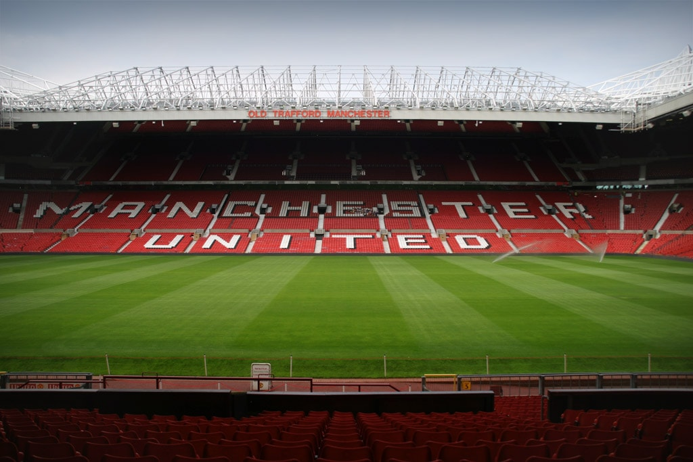
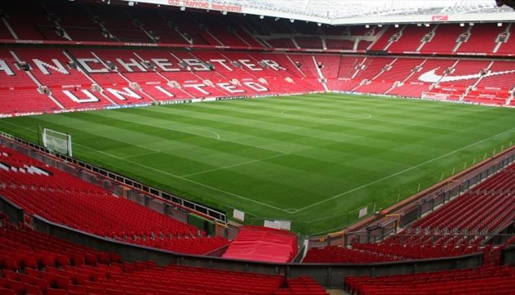
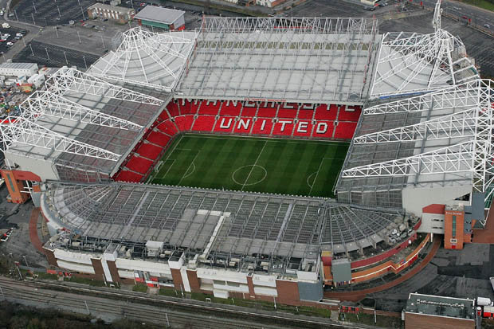
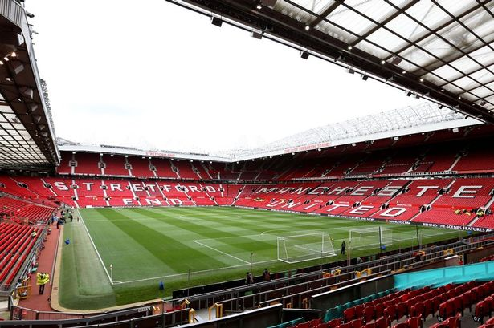

Old Trafford je fotbalový stadion, který se nachází ve stretfordské čtvrti Old Trafford. Od jeho založení v roce 1910 je stadion domovem ligového klubu Manchester United FC. Maximální kapacita stadionu je 75 635 diváků, díky čemuž je největším čistě fotbalovým stadionem v celém Spojeném království, třetím největším stadionem ve Spojeném království a jedenáctým největším stadionem v Evropě. Stadion je vzdálen 800 metrů od kriketového hřiště Old Trafford a stejnojmenné tramvajové zastávky.




Online Rezervace hřiště
V případě, že chcete zrušit rezervaci, volejte na telefonní číslo - 777112233